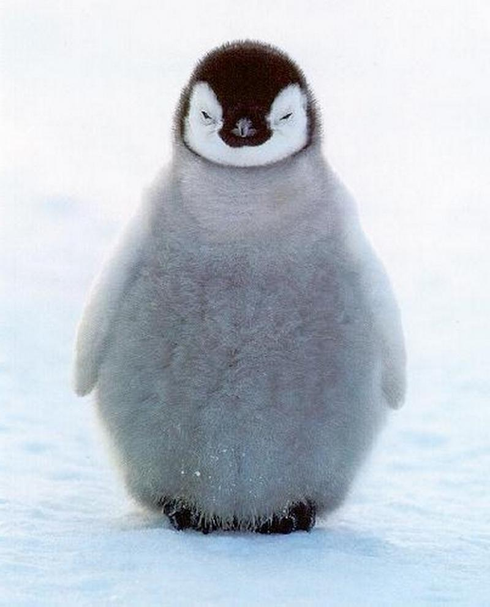
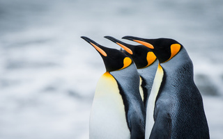
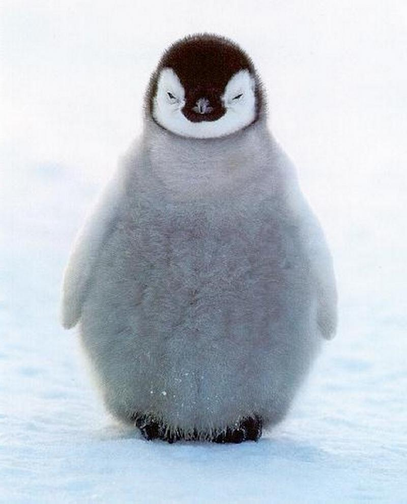
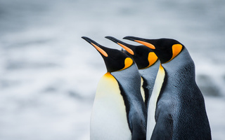
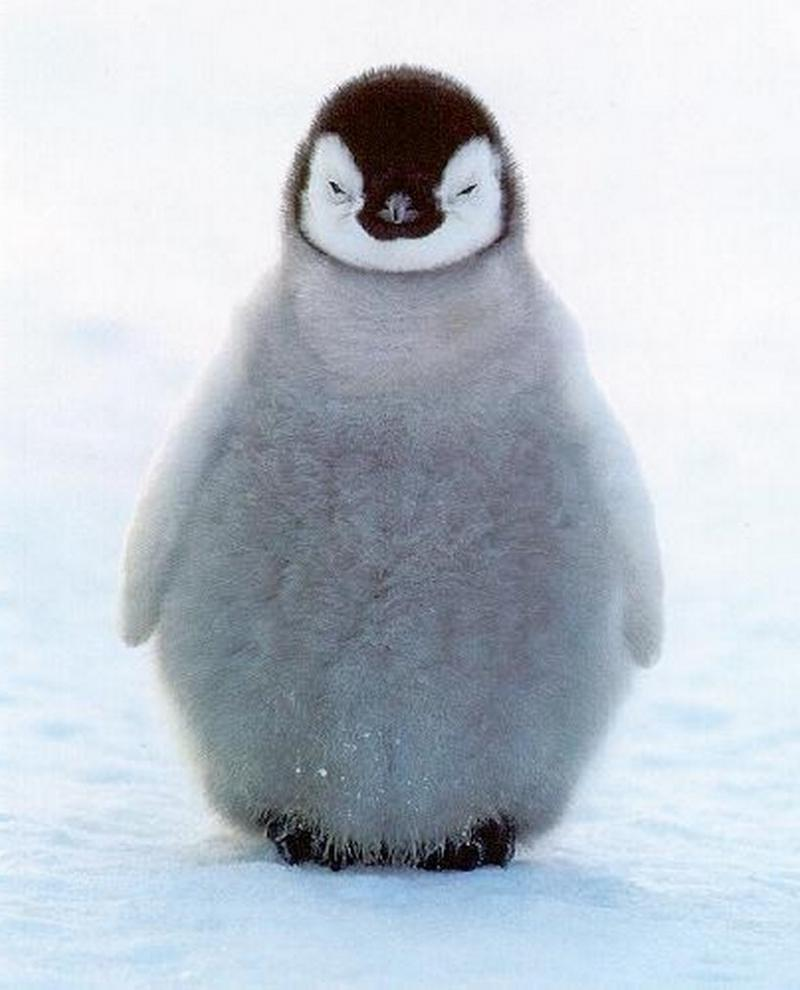
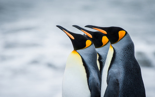

Penguins (order Sphenisciformes, family Spheniscidae) are a group of aquatic, flightless birds. They live almost exclusively in the Southern Hemisphere, with only one species, the Galapagos penguin, found north of the equator. Highly adapted for life in the water, penguins have countershaded dark and white plumage, and their wings have evolved into flippers. Most penguins feed on krill, fish, squid and other forms of sea life caught while swimming underwater. They spend about half of their lives on land and half in the oceans.
Although almost all penguin species are native to the Southern Hemisphere, they are not found only in cold climates, such as Antarctica. In fact, only a few species of penguin live so far south. Several species are found in the temperate zone, and one species, the Galápagos penguin, lives near the equator.

